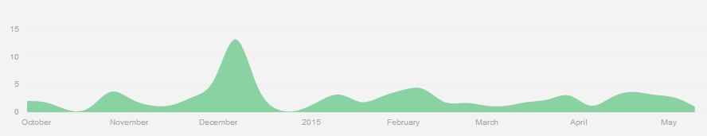

StudentOnline
An Overview of the Wilmington Christian School Advanced Topics Class of 2015 Senior Project
Created by Nathnaniel Albrecht / @albrechtnate
An overview of the inital project goals
↓
Project Description
StudentOnline is a web application designed to help Teachers, Students, and Administrators manage their grades and academic lives online.
Project Thesis
Prove by example that "Web applications, with the technology available to us today, are serious alternatives to traditional native-based applications."
Project Goals
- Must work with 3 different views/access-levels (Student, Teacher, Administrator)
- Must be built from the ground-up to be offline enabled
- Must be built "mobile-first" and responsive from the ground-up
- Must use a modular design that can easily be changed, added to, or updated
- Only has to work in the latest version of Google Chrome
- Must use Web Notifications API
- Must implement tasteful sound-effects on interaction
- Must include animations to transition from one state to the next
Some Quick Stats

90 Commits over a 7 1/2 Month Period
95.2% CSS | 4.1% Javascript
8 Main Custom Javascript Files Containing 22 Different Functions
Successful Aspects of The Project
- Build process and code quality
- Performance benefits by loading only what has changed
- Built with the Foundation framework so inherently responsive
- Stores data locally in a indexeddb and performs sync
- Notification if remote server data has updated allowing you to update your local copy
- ContentEditable Support Including Code to Send Changes Made to the Server
- Interaction Sounds when user clicks on links of buttons